belt.ran
betaGive your AI agents your databases — not your passwords.
A native, lightweight (~8 MB) database client that is also a secure MCP server: Claude Code, Codex and other agents query the connections you already saved — the password stays in the Keychain, production is read-only and risky writes wait for your approval.
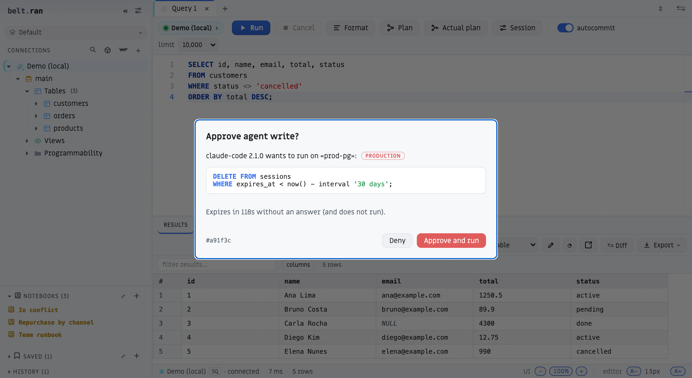
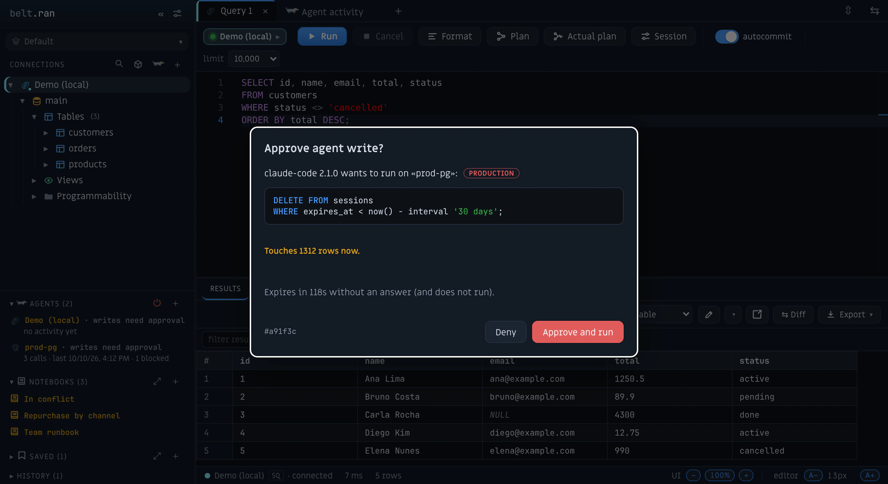
Download
Verify your download (SHA-256)
Every release publishes a SHA256SUMS.txt file. Compare the hash of the file you downloaded with its line in that file. It matters most on Windows, where the installer is not code-signed yet.
# macOS / Linux
shasum -a 256 belt.ran-macos.dmg
# Windows (PowerShell)
Get-FileHash .\belt.ran-windows-setup.exe -Algorithm SHA256Why belt.ran
Your databases, safe for AI agents
Stop pasting credentials into chats or spinning up throwaway containers just so an agent can read a database. belt.ran becomes the MCP server for your Claude Code, Codex or Cursor — using the connections you already have.
- The password never leaves the Keychain — the agent never sees a credential.
- Opt-in per connection — only what you enable under “Agent access” is visible.
- Production is read-only — on Postgres, MySQL, SQLite and ClickHouse the database itself enforces it (the session opens read-only); on the other engines, a per-command guard.
- Writes wait for your approval — you see the exact SQL and approve or deny it; no answer within two minutes means it does not run.
- Sensitive data is masked — emails, SSNs, phones, passwords and tokens reach the agent masked; your own grid still shows everything.
- Cancel really cancels — stopping the agent kills the query on the server (Postgres, MySQL, SQL Server, ClickHouse, Mongo…); on the rest it aborts the in-flight request.
- Everything audited — every agent call is logged in the “Agent activity” tab.
$ claude mcp add --scope user beltran -- beltran mcp
Installed from the .dmg? Replace beltran with the full path: /Applications/belt.ran.app/Contents/MacOS/beltran. Or skip the terminal: connect Claude Code, Claude Desktop, Cursor or Codex with one click from a connection’s “Agent access”.
Approve before it writes.
When an agent wants to change data, belt.ran stops and shows you the exact statement — with the connection, the environment and a countdown. Approve and it runs; deny, or ignore it, and it never does.
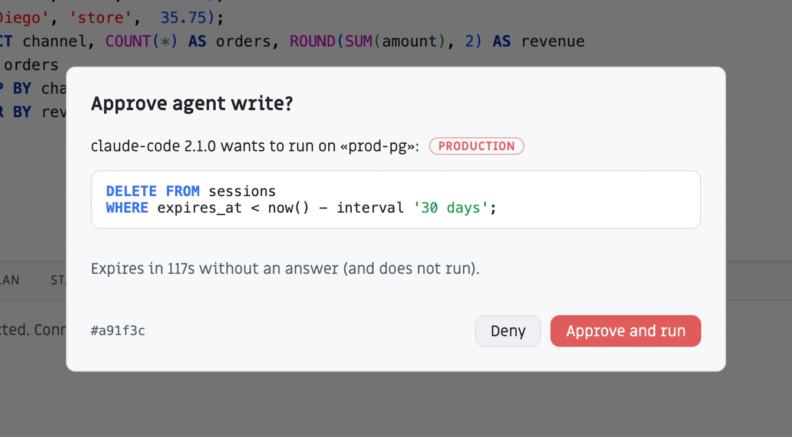
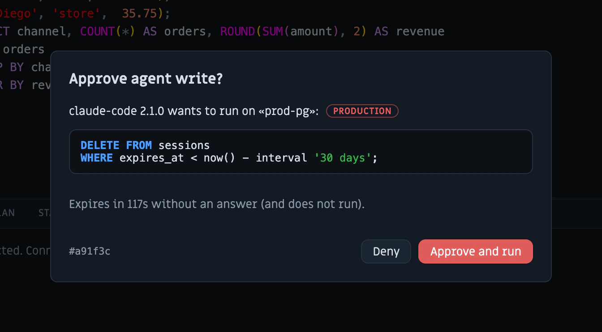
See what it’s running — and stop it.
While an agent query runs, a live panel shows the connection, the SQL and a timer. One click cancels it on the server.
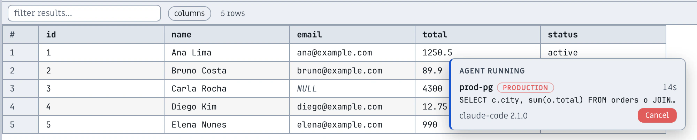
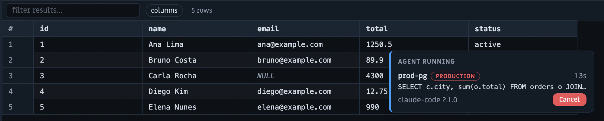
Every call, audited.
A log of everything the agents did: what they ran, how long it took, what was blocked — with the SQL highlighted. Stored only on your computer.
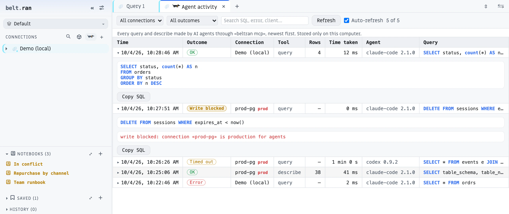
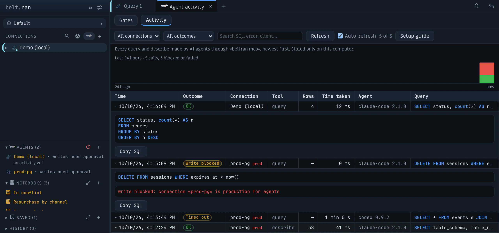
Connect your agents in one click.
Claude Code, Claude Desktop, Cursor and Codex: connect or disconnect from a connection’s “Agent access”. Describe the database so the agent picks the right one, set a time limit and a write policy, and choose which columns to mask.
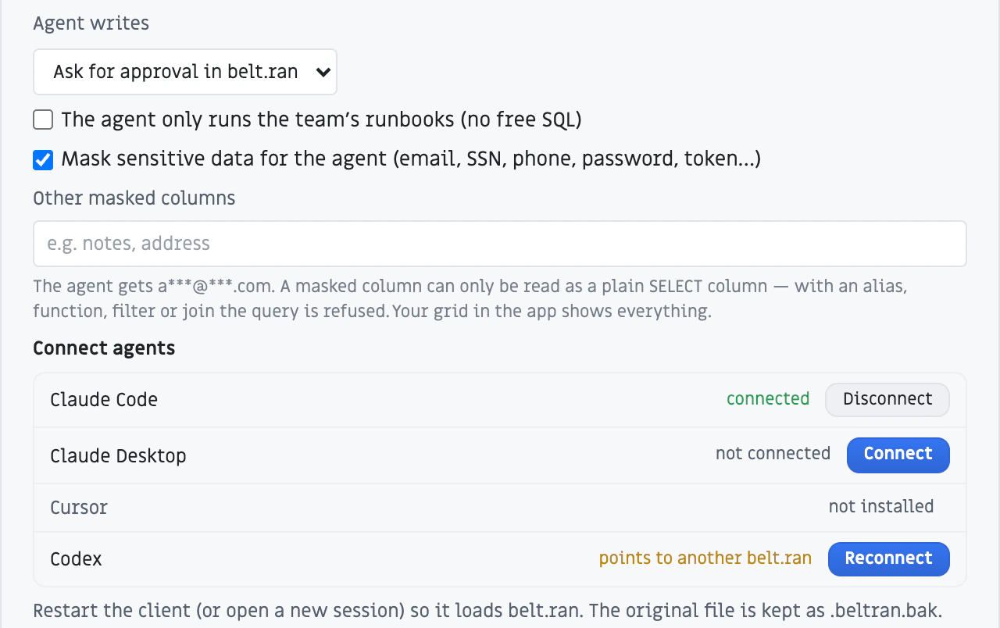
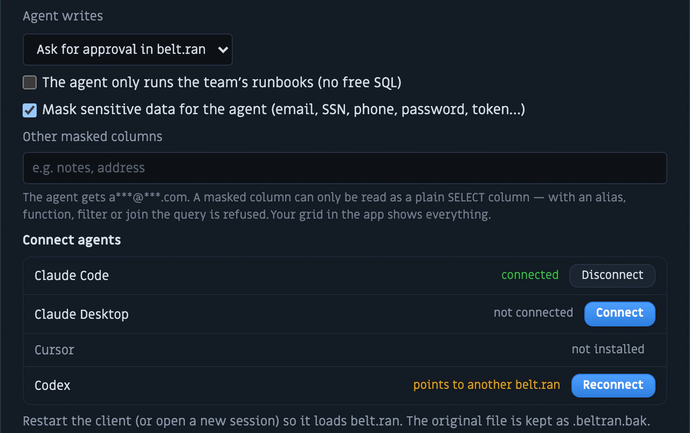
Why not a plain MCP server?
There are good open-source MCP servers for Postgres, MySQL and more. They are built to expose a database to an agent; belt.ran is built to also protect it from one.
| Topic | A typical database MCP server | belt.ran |
|---|---|---|
| Credentials | Connection string in an argument, environment variable or config file | Password stays in the OS keychain; the agent never sees it |
| Production | Read-only by convention or by filtering the SQL text | Read-only enforced by the database session on Postgres, MySQL, SQLite and ClickHouse |
| Writes | Allowed or blocked — nothing in between | Paused until you approve the exact SQL |
| Sensitive data | Returned as-is | Masked: emails, SSNs, phones, passwords, tokens |
| Audit | Whatever the agent’s client logs | Every call logged and searchable, on your computer |
A real database client underneath.
Explorer for 11 engines, an SQL editor with IntelliSense and a results grid that streams millions of rows — the client you would use every day, whether or not an agent is involved.
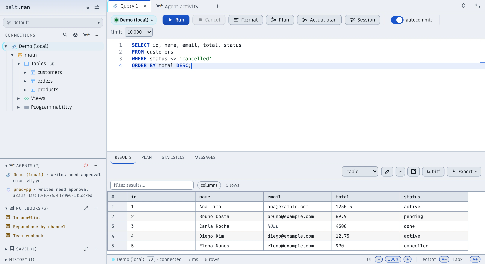
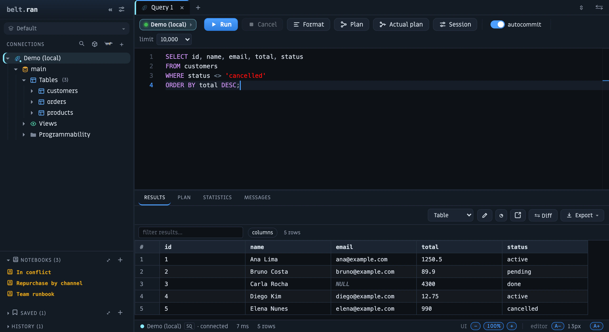
A connection dedicated to each tab
No queue on a shared connection. Each tab runs on its own: queries in parallel, real cancellation (out-of-band, straight to the server — not queued) and automatic reconnection when the session drops. Cancel means cancel.
11 engines, one explorer
Relational, analytical, NoSQL and streaming in one app. belt.ran speaks each engine’s native organization and presents it all in one coherent navigation — schemas, databases, topics, keys and collections, without switching tools:
Rust core, ~8 MB. Opens in a blink — no JVM, no Electron.
Server-side cursor, infinite scroll and real backpressure.
Tree with cost, rows and time per node (Postgres and MySQL).
Notion + Git + Jupyter style docs, with versions, params and backlinks.
Free during the beta
The individual client is free while belt.ran is in beta, and it is meant to stay that way: if paid plans arrive, they will cover team features (shared agent policies, audit export) — not what you use today.
belt.ran is proprietary software; the installers are public. It connects straight from your computer to your databases, and passwords live in your operating system’s keychain. Third-party components and their licenses are listed in the notices.
No telemetry. Besides the databases you connect to, belt.ran contacts GitHub when it starts (to check for updates) and, only if you open the MCP catalog, the official MCP registry. What an agent reads is processed by that agent’s own model provider — which is why read-only, approval and masking matter.